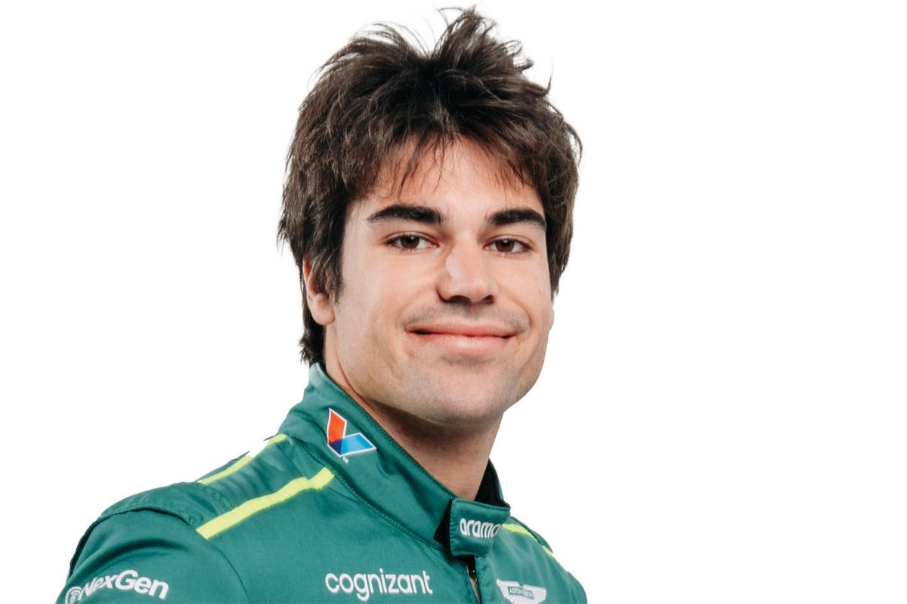

Max Verstappen
Tetracampeón del mundo (2021, 2022, 2023, 2024). Piloto dominante de Red Bull Racing con un estilo agresivo y preciso, ya se sienta en la mesa de los grandes. Muchos le dicen el GOAT.
Yuki Tsunoda
Experimentado piloto mexicano de Red Bull, conocido por su habilidad en el manejo de neumáticos.
Lewis Hamilton

Séptuple campeón del mundo, el piloto más exitoso en la historia de la F1. Actualmente en Mercedes.
Charles Leclerc
Joven talento de Ferrari, conocido por su velocidad en clasificación y su estilo de conducción agresivo.
Lando Norris
Piloto estrella de McLaren, ha demostrado un gran crecimiento y consistencia en los últimos años.
Oscar Piastri

Promesa australiana, campeón de F2 y F3. Actualmente compañero de Norris en McLaren.
George Russell

Joven británico con gran potencial, compañero de Hamilton en Mercedes desde 2022.
Kimi Antonelli

Jovencisimo italiano con gran potencial.
Fernando Alonso

Bicampeón del mundo (2005, 2006), regresó a la F1 con Aston Martin demostrando que sigue siendo de élite.
Lance Stroll
Piloto canadiense de Aston Martin, ha demostrado progreso constante en los últimos años.
Pierre Gasly
Piloto francés de Alpine, ganador del GP de Italia 2020 con AlphaTauri.
Franco Colapinto
Piloto argentino de Alpine, sensación el año pasado en Williams, haciendo su camino en la F1.
Liam Lawson

Joven piloto neozelandes de Visa Cash App RB, conocido por su estilo agresivo.
Isak Hadjar
Joven piloto Frances, muchisima proyección.
Gabriel Bortoleto
Brasilero de Stake F1 Team Kick Sauber, se esperan grandes cosas de el.
Nico Hulkenberg

Piloto Aleman en la F1, compite para Stake F1 Team Kick Sauber desde 2023.
Alexander Albon
Piloto tailandés-británico de Williams, conocido por su habilidad en carreras.
Carlos Sainz
Crack español, dejo ferrari para irse a williams. F.
Esteban Ocon
Piloto Frances de Haas F1 Team.
Oliver Bearman

Joven piloto britanico con mucha proyección".